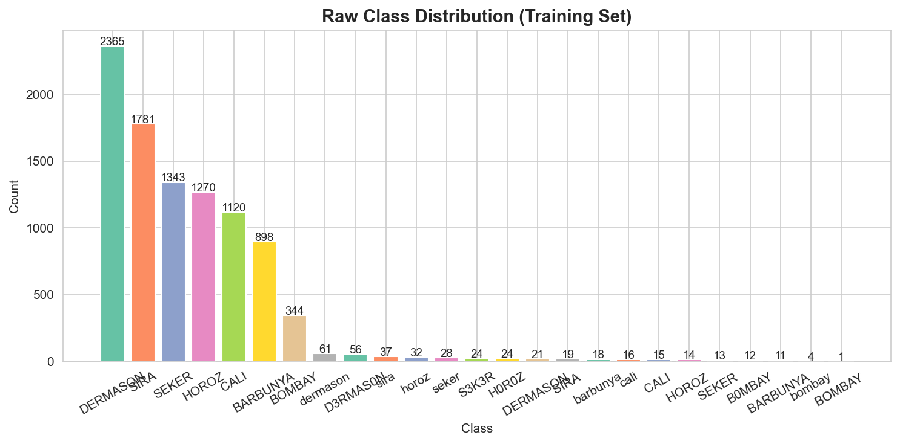
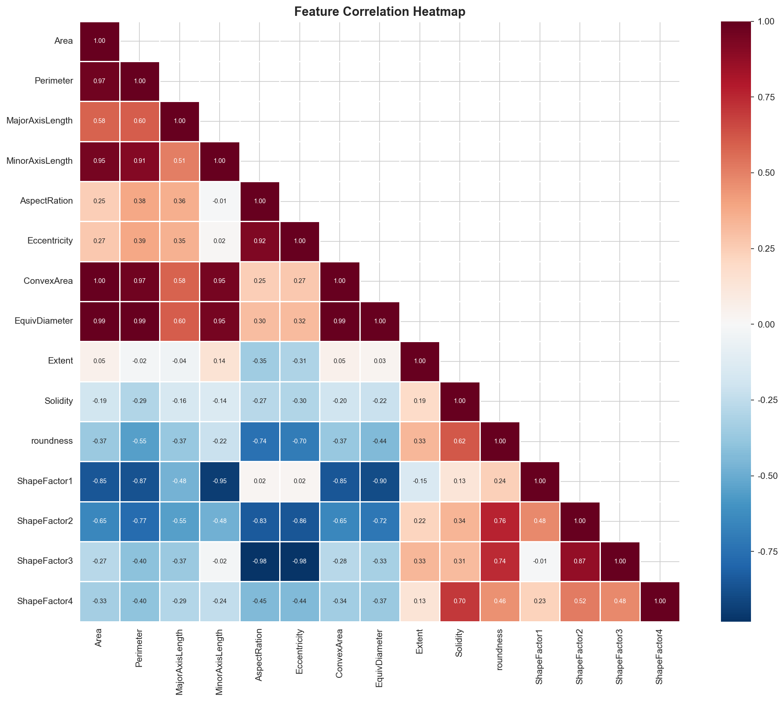
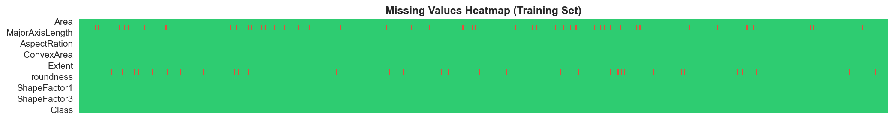
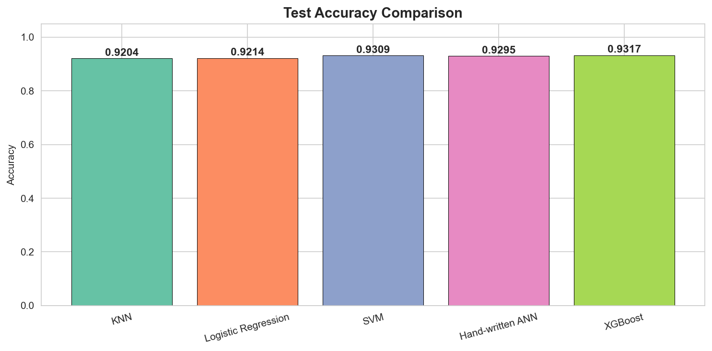
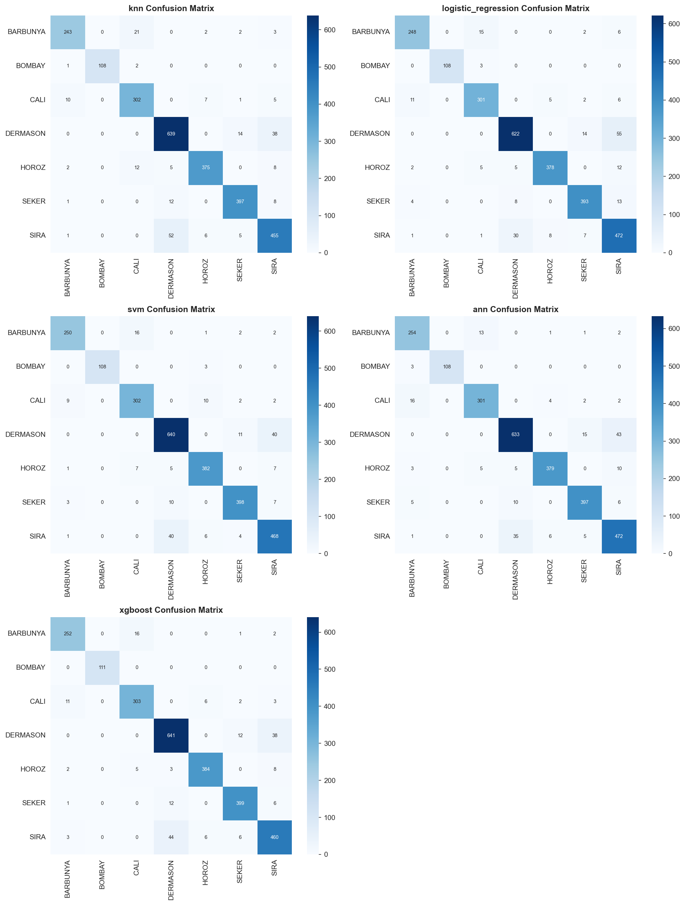
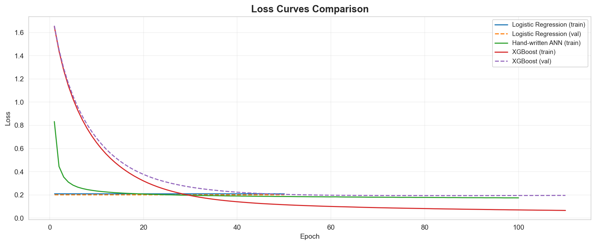
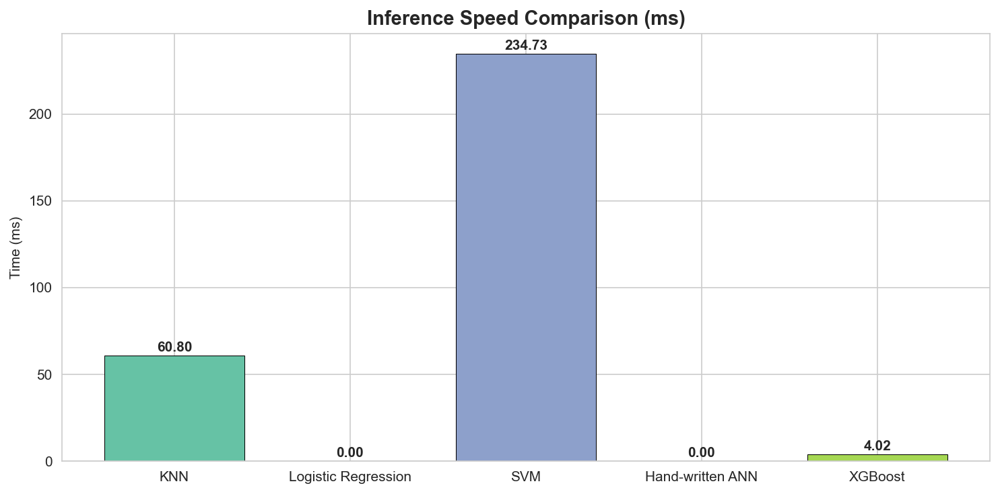
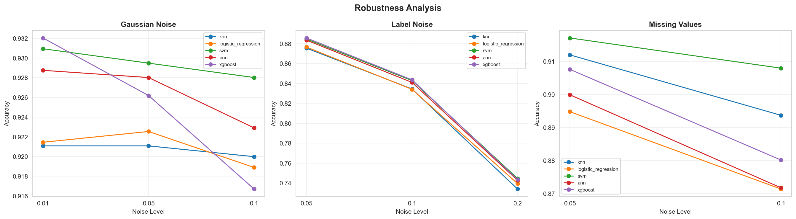
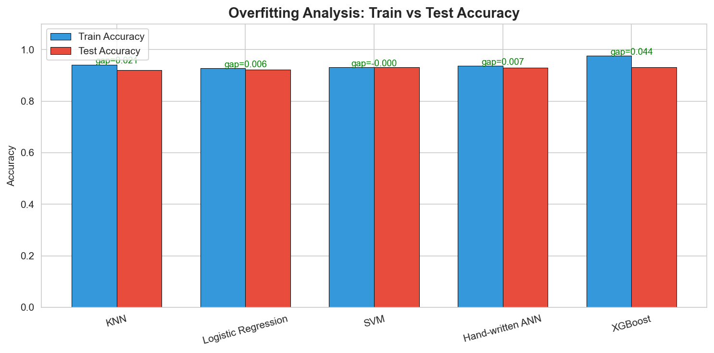

基于 UCI Dry Bean Dataset 的多分类机器学习项目 — 从脏数据处理到多算法对比评估的完整工程实践
数据来源于 UCI Machine Learning Repository，包含 7 种干豆的 16 个数值型形态学特征。
| 特征 | 含义 | 特征 | 含义 |
|---|---|---|---|
| Area | 面积 | EquivDiameter | 等效直径 |
| Perimeter | 周长 | Extent | 延展度 |
| MajorAxisLength | 长轴长度 | Solidity | 坚实度 |
| MinorAxisLength | 短轴长度 | roundness | 圆度 |
| AspectRation | 纵横比 | Compactness | 紧凑度 |
| Eccentricity | 离心率 | ShapeFactor1 | 形状因子 1 |
| ConvexArea | 凸面积 | ShapeFactor2 | 形状因子 2 |
| ShapeFactor3 | 形状因子 3 | ||
| ShapeFactor4 | 形状因子 4 |
| 标签 | 中文名 | Train 样本量 |
|---|---|---|
| DERMASON | Dermason 豆 | 2,503 |
| SIRA | Sira 豆 | 1,837 |
| SEKER | Seker 豆 | 1,408 |
| HOROZ | Horoz 豆 | 1,340 |
| CALI | Cali 豆 | 1,151 |
| BARBUNYA | Barbunya 豆 | 927 |
| BOMBAY | Bombay 豆 | 361 |


教师提供的是脏数据版本 (Dirty Version)，在建模前需识别并处理以下三类污染：
Perimeter 和 Solidity 两列约 5% 数据为 NaN 或 ? 标记，分布在所有三个数据集中。
原始标签含 25 种不同值 (实际仅 7 种)，存在拼写错误、大小写混乱和尾部空格。
Compactness 列含单位后缀 cm，导致该列被误识别为字符串类型。
| 噪声类型 | 示例 | 涉及样本 | 处理方法 |
|---|---|---|---|
| 拼写错误 (数字替换字母) | D3RMAS0N, S3K3R, H0R0Z | ~116 | 纠错映射字典 |
| 大小写混乱 | dermason, sira, horoz, cali | ~213 | str.upper() |
| 尾部空格 | DERMASON␣, SIRA␣ | ~93 | str.strip() |

所有操作仅在训练集上拟合参数，测试集/验证集使用相同参数变换，杜绝数据泄露。
| 步骤 | 方法 | 处理前 | 处理后 |
|---|---|---|---|
| 标签清洗 | strip + upper + 纠错映射 | 25 种标签 | 7 种标准标签 |
| 数值清理 | 正则去单位 + to_numeric | Compactness 为 object | 全数值类型 |
| 缺失值填充 | 按类别分组中位数 | ~5% 缺失 | 0 缺失 |
| 特征标准化 | StandardScaler | 量纲差异巨大 | 均值 0 / 方差 1 |
共实现 5 种多分类算法 — 4 种课内 + 1 种课外自学，其中 ANN 按照课程要求从零手写实现。
| 算法 | Accuracy | Precision (Macro) | Recall (Macro) | F1 (Macro) |
|---|---|---|---|---|
| KNN | 0.9204 | 0.9328 | 0.9261 | 0.9293 |
| Logistic Regression | 0.9214 | 0.9339 | 0.9292 | 0.9312 |
| SVM | 0.9309 | 0.9416 | 0.9364 | 0.9390 |
| Hand-written ANN | 0.9295 | 0.9386 | 0.9363 | 0.9373 |
| XGBoost ⭐ | 0.9317 | 0.9424 | 0.9408 | 0.9416 |



| 算法 | 总推理时间 (ms) | 单样本 (ms) | 排名 |
|---|---|---|---|
| Logistic Regression | ~0.00 | ~0.0000 | 最快 |
| Hand-written ANN | ~0.00 | ~0.0000 | 最快 |
| XGBoost | 4.02 | 0.0015 | 快 |
| KNN | 60.80 | 0.0222 | 较慢 |
| SVM (RBF) | 234.73 | 0.0858 | 最慢 |

| 噪声类型 | 强度范围 | 精度下降 | 最鲁棒算法 |
|---|---|---|---|
| 高斯噪声 | σ=0.01~0.10 | ~1% | 全部优秀 |
| 标签噪声 | 5%~20% | ~19% | XGBoost |
| 额外缺失值 | 5%~10% | 1~5% | SVM / XGBoost |

| 算法 | 训练集 Acc | 测试集 Acc | 过拟合 Gap | 评估 |
|---|---|---|---|---|
| KNN | 0.9415 | 0.9204 | 0.0212 | 轻微 |
| Logistic Regression | 0.9272 | 0.9214 | 0.0057 | 几乎无 |
| SVM | 0.9309 | 0.9309 | -0.0000 | 无 |
| Hand-written ANN | 0.9363 | 0.9295 | 0.0068 | 几乎无 |
| XGBoost | 0.9758 | 0.9317 | 0.0441 | 中等 (可接受) |
